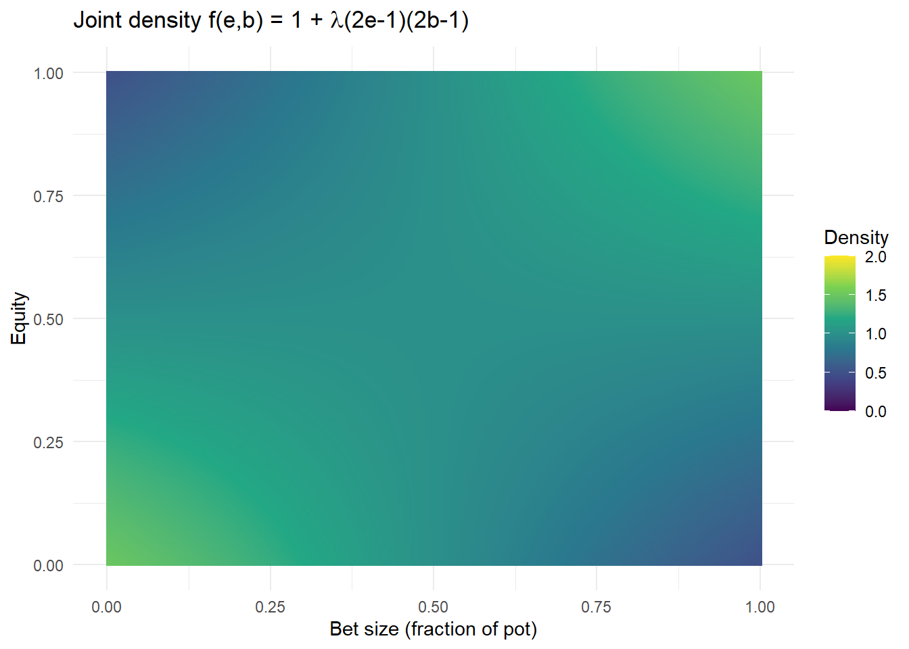
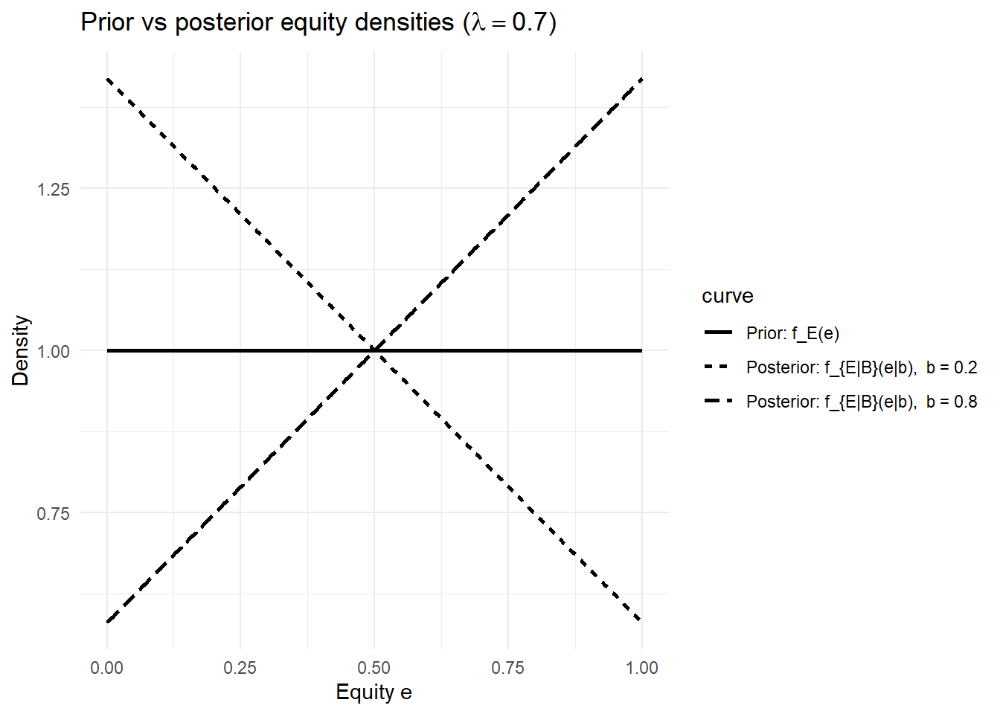

Late in a no-limit Texas Hold’em tournament, two players see a flop. No cards are revealed, but one player makes a large bet—much larger than the pot itself. The other player must now decide whether to fold, call, or raise.
Nothing about the physical state of the game has changed. The cards are exactly what they were a moment ago. And yet, the situation feels fundamentally different.
Before the bet, many hands seemed plausible. After the bet, some hands feel far more likely than others.
This shift—from what was possible to what now seems plausible—is the phenomenon we want to understand mathematically.
6.1.1 The Puzzle
Suppose that, before the flop action, the betting player could plausibly be holding any one of several hand types: - very strong hands, - medium-strength hands, - weak or speculative hands.
We may not know which is correct, but we may have reasonable beliefs about their relative likelihoods.
Now the bet arrives.
Intuitively, a very large bet seems more consistent with some hands than with others. Strong hands might make such a bet frequently; weak hands might do so rarely. Medium hands might fall somewhere in between.
The central question is not what hand the player actually has.
The question is:
How should our beliefs about the possible hands change once the bet is observed?
6.1.2 Why Naive Reasoning Fails
It is tempting to reason informally:
“Large bets usually mean strong hands.”
“Sometimes players bluff.”
“This player has bluffed before.”
All of these statements may be true—but none of them specify how much belief should shift, or how multiple pieces of information should be combined.
If we are not careful, we risk two common mistakes: 1. Overreacting to new information, treating one action as decisive. 2. Underreacting, failing to revise beliefs even when evidence is strong.
We need a systematic rule that tells us: - how to start with an initial belief, - how to incorporate observed actions, - and how to arrive at an updated belief that is mathematically consistent.
6.1.3 Hidden States and Observable Evidence
This hand already contains the essential structure of a probabilistic inference problem.
The opponent’s cards are hidden.
The opponent’s bet is observable.
The bet depends (perhaps imperfectly) on the cards.
We must reason backward from the observed action to the hidden cause.
Poker forces us to confront this structure repeatedly. We never see the full state of the world; we see only fragments of evidence, arriving in sequence.
The mathematics that governs this reasoning is not specific to poker. It appears whenever we reason from effects to causes, from data to explanation, or from observation to belief.
6.1.4 The Need for Conditional Probability
To answer the question raised by this hand, we must be able to say things like:
What is the probability of seeing a bet given a strong hand?
What is the probability of a strong hand given that a bet was observed?
How do these two quantities differ?
How should prior beliefs be adjusted in light of new evidence?
These questions are not interchangeable. Confusing them leads to faulty inference.
Conditional probability provides the language to distinguish them. Bayes’ theorem provides the rule that connects them.
The remainder of this chapter develops that mathematics, beginning with simple discrete models and gradually moving to more realistic continuous ones. Poker will remain our guide—not as a strategy manual, but as a laboratory for understanding how rational belief revision works under uncertainty.
6.2 Mathematical Framework and Poker Theory
This chapter studies how probabilities change when new information is observed. The mathematics underlying this process is conditional probability and Bayes’ theorem. Poker serves as a concrete setting in which uncertainty is genuine, information arrives sequentially, and hidden states are never directly revealed.
At the start of a poker hand, players have only partial information: their own cards, the betting structure, and prior experience. As the hand unfolds, additional information arrives through community cards and observed actions. What changes is not the underlying deal of the cards, but the beliefs players hold about one another. Conditional probability is the mathematical language for tracking these belief changes.
We begin in the discrete setting, where the logical structure of belief updating is most transparent. We then revisit the same ideas in continuous probability spaces, where observable evidence—such as bet sizes—varies along a continuum.
Throughout the chapter, we will return to two running examples: 1. a discrete holding-category model, and
2. a continuous bet-size model.
6.3 Discrete Probability
6.3.1 Conditional, Joint, and Total Probability
We work first with a finite or countable probability space (\Omega,\mathcal{F},\mathbb{P}). In this setting, probabilities can be assigned directly to individual outcomes or categories, making the mechanics of conditioning easy to see.
The basic objects of interest are joint, conditional, and marginal probabilities. Each corresponds to a different informational viewpoint: joint probability describes what is true simultaneously, conditional probability describes what is true given information, and marginal probability describes what is true when some information is ignored.
Definition (Joint Probability). For events A,B \subseteq \Omega, the joint probability of A and B is
\mathbb{P}(A \cap B).
Joint probability measures how often two events occur together. It treats both events symmetrically and does not assume that either is known first.
Definition (Joint Distribution of Discrete Random Variables). Let X_1,\dots,X_n be discrete random variables, each taking values in a finite set. The joint distribution of (X_1,\dots,X_n) is the collection of probabilities
\mathbb{P}(X_1=x_1,\; X_2=x_2,\;\dots,\; X_n=x_n),
defined for all possible combinations (x_1,\dots,x_n) of values.
The joint distribution encodes all probabilistic information about the variables taken together. Marginal and conditional distributions are obtained from it by summing over appropriate subsets of values.
Interpretation.
Joint probability concerns events; joint distributions extend this idea to random variables by assigning probabilities to simultaneous realizations of several variables.
Running Example 1 (Discrete setup).
Let H represent an opponent’s holding category, taking values
\{\text{strong}, \text{medium}, \text{weak}\}.
Let A represent a particular betting action, such as a bet on the flop.
The joint distribution of (H,A) assigns probabilities to each holding–action pair.
For example, the joint probability
\mathbb{P}(H=\text{strong}, A=\text{bet})
represents the frequency with which strong hands and bets occur together.
Running Example 1 (Discrete setup, continued).
Suppose the opponent’s holding category H and betting action A have the following joint distribution.
Here, the action A takes values in \{\text{bet}, \text{check}\}.
Holding H
A=\text{bet}
A=\text{check}
Row total
strong
0.18
0.07
0.25
medium
0.20
0.30
0.50
weak
0.05
0.20
0.25
Column total
0.43
0.57
1.00
This table specifies the joint distribution of (H,A).
Each row sums to the prior probability of the corresponding holding category.
Each column sum gives the marginal probability of observing that action.
Individual entries represent joint probabilities, such as
\mathbb{P}(H=\text{strong}, A=\text{bet}) = 0.18.
In poker terms, the table encodes how often different hands tend to produce different actions, without assuming that any action uniquely determines a hand.
6.3.2 Marginal Distributions from the Joint Distribution
The joint distribution of (H,A) records probabilities for pairs of outcomes: a holding category and an action. Often, however, we want probabilities for just one variable at a time—either the distribution of holdings ignoring the action, or the distribution of actions ignoring the holding. These single-variable distributions are called marginal distributions because they are obtained by “summing out” the other variable.
Definition (Marginal Distribution, discrete case).
Let (X,Y) be a pair of discrete random variables with joint distribution \mathbb{P}(X=x, Y=y).
The marginal distribution ofX is the function
\mathbb{P}(X=x) = \sum_{y} \mathbb{P}(X=x, Y=y),
where the sum is over all possible values of Y.
The marginal distribution ofY is the function
\mathbb{P}(Y=y) = \sum_{x} \mathbb{P}(X=x, Y=y),
where the sum is over all possible values of X.
6.3.3 Computing the Marginals in Running Example 1
Recall the joint distribution table:
Holding H
A=\text{bet}
A=\text{check}
Row total
strong
0.18
0.07
0.25
medium
0.20
0.30
0.50
weak
0.05
0.20
0.25
Column total
0.43
0.57
1.00
6.3.3.1 Marginal distribution of H
We obtain \mathbb{P}(H=h) by summing across actions (row-wise):
So the marginal distribution of A is
\mathbb{P}(A=\text{bet})=0.43,\quad
\mathbb{P}(A=\text{check})=0.57.
This is the distribution of observed actions before we condition on anything about the opponent’s hand.
Poker interpretation.
The marginal distribution of H expresses beliefs about the opponent’s holding category before any action is observed. The marginal distribution of A describes how often bets and checks occur overall, averaged across all holdings. Bayes’ theorem and conditional probability enter when we ask the inverse question: once we observe A, how should the distribution of H change?
While marginal distributions are helpful, in poker analysis one is more typically focused on making decisions based on data that is available. In the context of our example for instance, we might ask what is the probability the player has a strong hand, given the infommation that they bet. Condtional Probability gives the framework for this conversation. |
Definition (Conditional Probability). If \mathbb{P}(B)>0, the conditional probability of A given B is \mathbb{P}(A \mid B) = \frac{\mathbb{P}(A \cap B)}{\mathbb{P}(B)}.
Conditioning represents an update of information. Once event B is known to have occurred, outcomes outside B are no longer possible. The remaining probability mass is rescaled so that probabilities still sum to one.
### Conditional Probability and Conditional Distributions in Running Example 1
-Marginal distributions describe what we believe before conditioning on new information. Conditional probability describes how those beliefs change after an event is observed.
In poker terms, marginal distributions describe beliefs before an action occurs; conditional distributions describe beliefs after we see what the opponent actually does.
Definition (Conditional Probability, discrete case).
Let X and Y be discrete random variables with \mathbb{P}(Y=y)>0.
The conditional probability of X=x given Y=y is
\mathbb{P}(X=x \mid Y=y)
=
\frac{\mathbb{P}(X=x, Y=y)}{\mathbb{P}(Y=y)}.
Fixing Y=y and allowing X to vary produces the conditional distribution ofX given Y=y.
6.3.4 Conditioning on a Bet in Running Example 1
Recall the joint distribution of holding category H and action A:
Holding H
A=\text{bet}
A=\text{check}
Row total
strong
0.18
0.07
0.25
medium
0.20
0.30
0.50
weak
0.05
0.20
0.25
Column total
0.43
0.57
1.00
From the column totals, the probability that a bet is observed is
\mathbb{P}(A=\text{bet}) = 0.43.
We now compute the conditional probabilities of each holding category given that a bet was observed.
6.3.5 The Conditional Distribution of H Given a Bet
Collecting these values, the conditional distribution of the holding category given a bet is
\mathbb{P}(H=\text{strong} \mid A=\text{bet}) \approx 0.42,
\quad
\mathbb{P}(H=\text{medium} \mid A=\text{bet}) \approx 0.47,
\quad
\mathbb{P}(H=\text{weak} \mid A=\text{bet}) \approx 0.11.
This distribution sums to 1, as required.
Poker interpretation.
Before any action was observed, the weak hand category had probability 0.25. After observing a bet, that probability drops to about 0.11. Strong hands increase in relative plausibility, even though they are still not certain.
This illustrates the core idea of conditional probability: observing an action reshapes belief without eliminating uncertainty.
6.4 The opponent’s hand has not changed. Only our information about it has.
Definition (Law of Total Probability).
Let \{B_1,\dots,B_n\} be a partition of \Omega with \mathbb{P}(B_i)>0. Then for any event A,
\mathbb{P}(A) = \sum_{i=1}^n \mathbb{P}(A \mid B_i)\mathbb{P}(B_i).
This identity expresses the probability of A as a weighted average across mutually exclusive scenarios.
6.4.1 Bayes’ Theorem (Discrete)
The definitions above describe how probabilities are related when information flows forward. Bayes’ theorem addresses the inverse problem: how beliefs about hidden causes should change when an effect is observed.
Theorem (Bayes’ Theorem, discrete).
Let A,B \in \mathcal{F} with \mathbb{P}(A)>0 and \mathbb{P}(B)>0. Then
\mathbb{P}(A \mid B)
=
\frac{\mathbb{P}(B \mid A)\mathbb{P}(A)}{\mathbb{P}(B)}.
### Bayes’ Theorem in Running Example 1
\mathbb{P}(H=h \mid A=\text{bet}) =
\frac{\mathbb{P}(H=h, A=\text{bet})}{\mathbb{P}(A=\text{bet})}.
Bayes’ theorem gives the same quantities, but it does so in a way that separates the update into two conceptual pieces: - a prior belief about the hidden state H, and - a likelihood model describing how actions arise from each hidden state. This is the form of the calculation we will reuse throughout the chapter. |
Bayes’ Theorem (random-variable form, discrete).
If \mathbb{P}(A=\text{bet})>0, then
\mathbb{P}(H=h \mid A=\text{bet})
=
\frac{\mathbb{P}(A=\text{bet} \mid H=h)\,\mathbb{P}(H=h)}
{\mathbb{P}(A=\text{bet})}.
The denominator can be computed from the law of total probability:
\mathbb{P}(A=\text{bet})
=
\sum_{h'} \mathbb{P}(A=\text{bet} \mid H=h')\,\mathbb{P}(H=h').
6.4.2 Step 1: Extract priors and likelihoods from the table
From the joint distribution table, the prior distribution of H (row totals) is:
\mathbb{P}(H=\text{strong})=0.25,\quad
\mathbb{P}(H=\text{medium})=0.50,\quad
\mathbb{P}(H=\text{weak})=0.25.
Next compute the likelihoods \mathbb{P}(A=\text{bet}\mid H=h) by conditioning within each row:
6.4.3 Step 2: Compute the evidence term \mathbb{P}(A=\text{bet})
Using the law of total probability,
\mathbb{P}(A=\text{bet})
=
(0.72)(0.25) + (0.40)(0.50) + (0.20)(0.25)
=
0.18 + 0.20 + 0.05
=
0.43.
This matches the column total in the joint table, as it must.
6.4.4 Step 3: Compute the posterior distribution
Now apply Bayes’ theorem to each holding category.
For a strong hand:
\mathbb{P}(H=\text{strong}\mid A=\text{bet})
=
\frac{(0.72)(0.25)}{0.43}
=
\frac{0.18}{0.43}
\approx 0.419.
For a medium hand:
\mathbb{P}(H=\text{medium}\mid A=\text{bet})
=
\frac{(0.40)(0.50)}{0.43}
=
\frac{0.20}{0.43}
\approx 0.465.
For a weak hand:
\mathbb{P}(H=\text{weak}\mid A=\text{bet})
=
\frac{(0.20)(0.25)}{0.43}
=
\frac{0.05}{0.43}
\approx 0.116.
Thus the posterior distribution is
\mathbb{P}(H=\text{strong} \mid A=\text{bet}) \approx 0.42,\quad
\mathbb{P}(H=\text{medium} \mid A=\text{bet}) \approx 0.47,\quad
\mathbb{P}(H=\text{weak} \mid A=\text{bet}) \approx 0.11.
Poker interpretation.
Bayes’ theorem makes the “belief update” visibly modular:
the prior reflects what was plausible before the action,
the likelihood measures how compatible the observed action is with each hidden state,
the posterior reweights the hidden states accordingly.
A bet does not certify a strong hand, but it changes the balance of plausibility in a mathematically controlled way.
6.4.5 Hidden Versus Observable Random Variables (Discrete)
To apply Bayes’ theorem systematically, we distinguish between hidden and observable random variables.
Let: - H be a discrete random variable representing a hidden state (holding category), - A be a discrete random variable representing an observable action.
The joint distribution \mathbb{P}(H=h, A=a) encodes how often each hidden–observable pair occurs.
From this joint distribution we obtain: - the prior\mathbb{P}(H=h), - the likelihood\mathbb{P}(A=a \mid H=h), - the posterior\mathbb{P}(H=h \mid A=a).
6.4.6 Transition: Why Move to Continuous Models?
Discrete models clarify logic, but many observables in poker—such as bet size—are not naturally discrete. The magnitude of a bet carries information beyond the fact that a bet occurred.
To capture this information faithfully, we move to continuous probability models.
6.5 Continuous Probability
6.6 From Discrete to Continuous: Equity and Bet Size
In the discrete models above, hidden states were represented by coarse categories such as strong, medium, and weak. While useful for clarifying structure, such categories compress substantial information. In practice, hands vary continuously in strength, and actions vary continuously in magnitude.
To model this finer structure, we introduce hand equity and bet size as continuous random variables.
6.6.1 Definition: Equity of a Hand
Definition (Hand Equity).
The equity of a poker hand is the probability that the hand will win (or tie, with ties appropriately weighted) against an opponent’s range, conditional on all currently available information.
Formally, equity is a number in the interval [0,1].
An equity of 0 corresponds to a hand that cannot win.
An equity of 1 corresponds to a hand that is guaranteed to win.
Equity is not a realized outcome; it is a probability. It summarizes uncertainty about future cards and hidden opponent holdings into a single quantitative measure.
Interpretation.
Equity plays the role of a continuous hidden state. Unlike the discrete categories used earlier, equity varies smoothly and reflects gradual differences in hand strength.
6.6.2 Bet Size as a Continuous Observable
To model betting behavior, we normalize bet sizes relative to the pot.
Definition (Normalized Bet Size).
Let B denote the size of a bet as a fraction of the current pot. We assume
B \in [0,1],
where: - B=0 corresponds to checking, - values close to 1 correspond to bets approaching the size of the pot.
This normalization removes dependence on absolute chip counts and isolates the informational content of the bet.
6.6.3 Joint Distribution of Equity and Bet Size
We now model the relationship between hand strength and betting behavior using a joint distribution.
Let: - E be a continuous random variable representing hand equity, taking values in [0,1], - B be a continuous random variable representing normalized bet size, taking values in [0,1).
Definition (Joint Distribution of Equity and Bet Size).
A joint distribution of (E,B) is specified by a joint probability density function
f_{E,B}(e,b),
defined for e \in [0,1] and b \in [0,1], such that
\int_0^1 \int_0^1 f_{E,B}(e,b)\, db\, de = 1.
For any regions A \subseteq [0,1] and C \subseteq [0,1],
\mathbb{P}(E \in A,\; B \in C)
=
\int_A \int_C f_{E,B}(e,b)\, db\, de.
Interpretation.
The joint density f_{E,B}(e,b) encodes how likely different combinations of equity and bet size are to occur together. It is the continuous analogue of the joint probability table used in Running Example 1.
6.6.4 A Simple Joint Density for Equity and Bet Size
To work concretely in the continuous setting, we now introduce a simple joint density for hand equity and bet size that allows us to model dependence while keeping calculations transparent.
The purpose of this model is not realism in every detail, but clarity: it lets us see exactly how dependence between a hidden variable and an observable signal affects belief updating.
6.6.5 Modeling Setup
Let: - E \in [0,1] denote the equity of a hand, - B \in [0,1) denote the size of a bet as a fraction of the pot.
We treat both as continuous random variables supported on the unit interval.
6.6.6 Definition: A Parametric Joint Density
For a parameter \lambda \in [-1,1], define the joint density
f_{E,B}(e,b)
=
1 + \lambda(2e - 1)(2b - 1),
\qquad 0 \le e \le 1,\; 0 \le b < 1.
Outside this region, the density is zero.
6.6.7 Why This Is a Valid Density
First, the density integrates to 1:
\int_0^1 \int_0^1 \bigl[1 + \lambda(2e - 1)(2b - 1)\bigr]\, db\, de = 1.
Second, when \lambda \in [-1,1], the expression
1 + \lambda(2e - 1)(2b - 1)
is nonnegative for all e,b \in [0,1], ensuring that f_{E,B} is a valid probability density.
6.6.8 Marginal Densities in the Continuous Setting
In the discrete case, marginal distributions were obtained by summing rows or columns of a joint probability table. In the continuous setting, the same idea applies, but sums are replaced by integrals.
Marginal densities describe what we believe about one variable when we ignore the other. They represent baseline uncertainty before conditioning on new information.
Definition (Marginal Density).
Let (X,Y) be continuous random variables with joint density f_{X,Y}(x,y).
The marginal density ofX is defined by
f_X(x) = \int f_{X,Y}(x,y)\, dy,
where the integral is taken over all values of y in the support of Y.
The marginal density ofY is defined by
f_Y(y) = \int f_{X,Y}(x,y)\, dx,
where the integral is taken over all values of x in the support of X.
Interpretation.
Marginalization removes variables from consideration. It answers questions of the form:
How likely is each value ofX, regardless of Y?
What does our uncertainty aboutY look like before observing X?
No conditioning has occurred yet. Marginal densities reflect uncertainty prior to any observation.
6.6.9 Poker Interpretation
In our poker model: - E represents hand equity, a hidden continuous state. - B represents bet size, an observable signal.
The marginal density f_E(e) describes how equity is distributed before any betting action is observed.
The marginal density f_B(b) describes how often different bet sizes occur on average, across all hands.
Just as in the discrete running example, marginal distributions do not incorporate information from observed actions. They form the baseline against which conditional and posterior distributions are compared.
6.6.10 Marginalization as Information Loss
It is important to note that marginalization deliberately discards information. When we integrate out a variable, we lose any dependence between variables.
This is not a flaw; it is a feature. Marginal densities provide a reference point. Conditional densities and Bayesian updates describe how this baseline changes when information is introduced.
With this framework in place, we now compute the marginal densities for our specific joint model of equity and bet size.
6.6.11 Marginal Distributions
An important feature of this model is that the marginals are uniform:
f_E(e) = 1, \qquad f_B(b) = 1.
Thus, before observing any action, all equity values and all bet sizes are equally plausible.
All structure in the model comes from the dependence between E and B, not from the marginals themselves.
6.6.12 Interpretation of the Parameter \lambda
The parameter \lambda controls the direction and strength of dependence:
\lambda = 0
Equity and bet size are independent.
\lambda > 0
Higher equity values tend to be associated with larger bets, and lower equity values with smaller bets.
\lambda < 0
Higher equity values tend to be associated with smaller bets, and lower equity values with larger bets.
The magnitude |\lambda| determines how strong this association is.
6.6.13 Poker Interpretation
In this model: - Equity is the hidden continuous state, - Bet size is the observable signal, - \lambda encodes how informative bet size is about equity.
When \lambda = 0, observing a bet conveys no information about equity.
When \lambda \ne 0, observing a bet reshapes beliefs about equity in a precise, quantifiable way.
This mirrors the discrete running example: the cards do not change, but the distribution describing our beliefs does.
6.6.14 Visualizing the Joint Density of Equity and Bet Size
The following figure visualizes the joint density
f(e,b) = 1 + \lambda(2e-1)(2b-1)
on the unit square.
# Set dependence parameterlambda <- .5# Create gridn <-200e_vals <-seq(0, 1, length.out = n)b_vals <-seq(0, 1, length.out = n)grid <-expand.grid( e = e_vals, b = b_vals )# Joint densitygrid$f <-1+ lambda * (2* grid$e -1) * (2* grid$b -1)# Plotlibrary(ggplot2)ggplot(grid, aes(x = b, y = e, fill = f)) +geom_raster() +scale_fill_viridis_c(name ="Density", limit=c(0,2)) +labs( x ="Bet size (fraction of pot)", y ="Equity", title =expression(paste("Joint density f(e,b) = 1 + ", lambda, "(2e-1)(2b-1)")) ) +theme_minimal()

Poker interpretation.
In this model, equity summarizes the hidden strength of a hand, while bet size is the observable signal. The joint distribution captures regularities in how hands of different strengths tend to produce bets of different sizes—without assuming that any single bet uniquely identifies a hand.
This sets the stage for continuous versions of conditional probability and Bayes’ theorem.
### Conditional Probability in the Continuous Setting
In the continuous setting, probabilities are described by densities, not point probabilities. As a result, conditional probability must also be expressed in terms of densities.
The underlying idea, however, is exactly the same as in the discrete case: conditioning represents belief updating after information is observed.
### Definition: Conditional Density
Definition (Conditional Density). Let (X,Y) be continuous random variables with joint density f_{X,Y}(x,y) and marginal density f_Y(y).
If f_Y(y) > 0, the conditional density of X given Y=y is defined by
f_{X \mid Y}(x \mid y)
=
\frac{f_{X,Y}(x,y)}{f_Y(y)}.
This definition is the continuous analogue of
\mathbb{P}(X=x \mid Y=y)
=
\frac{\mathbb{P}(X=x, Y=y)}{\mathbb{P}(Y=y)}.
### What Conditioning Means in the Continuous Case
Because \mathbb{P}(Y=y)=0 for any exact value y, conditioning on Y=y does not mean that Y literally equals y. Instead, it should be interpreted as conditioning on an infinitesimally small neighborhood around y.
The conditional density describes how probability mass is distributed relative to the observed value of Y.
Fixing Y=y and allowing X to vary produces a full probability distribution in X:
\int f_{X \mid Y}(x \mid y)\,dx = 1.
### Poker Context: Conditioning on a Bet Size
We now return to the continuous poker model.
Recall: - E \in [0,1] is the equity of a hand (hidden), - B \in [0,1) is the bet size as a fraction of the pot (observed), - the joint density is
f_{E,B}(e,b) = 1 + \lambda(2e-1)(2b-1),
\qquad 0 \le e,b \le 1,
with \lambda \in [-1,1].
### Example: Conditional Density of Equity Given a Bet
Suppose we observe a bet of size B=b.
The conditional density of equity given this bet is
f_{E \mid B}(e \mid b)
=
\frac{f_{E,B}(e,b)}{f_B(b)}.
From the marginal computation (done earlier), we know that
f_B(b) = 1.
Therefore,
f_{E \mid B}(e \mid b)
=
1 + \lambda(2e-1)(2b-1),
\qquad 0 \le e \le 1.
This function is a valid density in e for each fixed value of b.
### Interpretation
- If \lambda = 0, then
f_{E \mid B}(e \mid b) = 1,
and observing a bet conveys no information about equity.
- If \lambda > 0 and b is large, then (2b-1)>0, and the density places more weight on higher equity values.
- If \lambda > 0 and b is small, then (2b-1)<0, and the density favors lower equity values.
In all cases, the cards have not changed. Only the distribution describing our beliefs has changed. ### Worked Example: ((E>0.75 B=0.75)) from Our Joint Density
Let (E) denote equity and (B) denote bet size in pot units. In our model, the joint density of ((E,B)) on the unit square is
If (), then (f_{E,B}(e,b)=1) (independence/uniform on the square), and
\mathbb{P}(E>0.75 \mid B=0.75)=\frac{1}{4}.
If (>0), then higher bets are associated with higher equity, so conditioning on (B=0.75) increases the probability above (1/4).
If (<0), it decreases the probability below (1/4).
(Recall (||) keeps the density nonnegative everywhere.)
6.6.15 Bayes’ Theorem in the Continuous Setting
In the continuous setting, Bayes’ theorem relates prior densities, likelihood functions, and posterior densities. Conceptually, nothing has changed from the discrete case: we are still updating beliefs about a hidden variable after observing new evidence. The difference is technical—probabilities are replaced by densities, and sums are replaced by integrals.
Let (X,Y) be continuous random variables with joint density f_{X,Y}(x,y), marginal density f_X(x), and conditional density f_{Y\mid X}(y\mid x).
If f_Y(y)>0, then the conditional density of X given Y=y is
f_{X \mid Y}(x \mid y)
=
\frac{f_{Y \mid X}(y \mid x)\,f_X(x)}
{\int f_{Y \mid X}(y \mid x')\,f_X(x')\,dx'}.
This formula expresses the posterior density explicitly in normalized form.
6.6.17 The \propto Notation
Bayes’ theorem is often written more compactly as
f_{X \mid Y}(x \mid y)
\propto
f_{Y \mid X}(y \mid x)\,f_X(x).
The symbol \propto means “is proportional to.”
It indicates that the left-hand side equals the right-hand side up to a normalizing constant that does not depend on x.
More precisely, writing
f_{X \mid Y}(x \mid y) \propto g(x)
means that there exists a constant C>0 (which may depend on y, but not on x) such that
f_{X \mid Y}(x \mid y) = C\, g(x).
The value of C is determined by the requirement that a probability density must integrate to one:
\int f_{X \mid Y}(x \mid y)\,dx = 1.
Solving for C yields
C^{-1} = \int g(x)\,dx,
which recovers the fully normalized version of Bayes’ theorem above.
6.6.18 Why This Notation Is Useful
The \propto notation emphasizes what changes beliefs rather than what merely rescales them.
The likelihoodf_{Y \mid X}(y \mid x) measures how compatible each value of x is with the observed data.
The priorf_X(x) records how plausible each value of x was before observing y.
The normalizing constant ensures mathematical correctness but does not affect relative plausibility across values of x.
In many applications—including poker inference and machine learning—the shape of the posterior matters more than its absolute scale. The proportional form makes this clear.
6.6.19 Example: Bayes’ Theorem for Equity Given a Bet
We now apply Bayes’ theorem to our running continuous poker model.
Recall: - E \in [0,1] is the equity of a hand (hidden), - B \in [0,1) is the bet size as a fraction of the pot (observed), - the joint density is
f_{E,B}(e,b)
=
1 + \lambda(2e-1)(2b-1),
\qquad 0 \le e,b \le 1,
with \lambda \in [-1,1].
From earlier sections, the marginal density of equity is
f_E(e) = 1,
so equity is uniformly distributed a priori.
6.6.20 Identifying the Likelihood
The likelihood is the conditional density of B given E=e:
f_{B \mid E}(b \mid e)
=
\frac{f_{E,B}(e,b)}{f_E(e)}
=
1 + \lambda(2e-1)(2b-1).
This function describes how betting behavior varies with equity in the model.
6.6.21 Applying Bayes’ Theorem
Using the proportional form of Bayes’ theorem,
f_{E \mid B}(e \mid b)
\propto
f_{B \mid E}(b \mid e)\,f_E(e).
Substituting the expressions above gives
f_{E \mid B}(e \mid b)
\propto
1 + \lambda(2e-1)(2b-1).
To normalize, we divide by the marginal density of B:
f_B(b)
=
\int_0^1 \bigl[1 + \lambda(2e-1)(2b-1)\bigr]\,de
=
1.
Thus, the normalized posterior density is
f_{E \mid B}(e \mid b)
=
1 + \lambda(2e-1)(2b-1),
\qquad 0 \le e \le 1.
6.6.22 Interpretation
If \lambda = 0, then equity and bet size are independent, and observing a bet conveys no information.
If \lambda > 0 and b is large, the posterior density places more weight on higher equity values.
If \lambda > 0 and b is small, the posterior shifts toward lower equity values.
In all cases, the cards themselves have not changed.
Only the distribution describing our beliefs has been updated.
6.6.23 Visualizing Prior vs Posterior Densities
In our running model, the prior density for equity is uniform:
f_E(e)=1,\qquad 0\le e\le 1.
After observing a bet size B=b, the posterior density becomes
f_{E\mid B}(e\mid b)=1+\lambda(2e-1)(2b-1).
The following figure overlays the prior and posterior densities to show how observing a bet reshapes belief about equity.

Prior density f_E(e) (uniform) compared with posterior densities f_{E|B}(e|b) for two observed bet sizes b, using the joint model f(e,b)=1+λ(2e-1)(2b-1).
6.6.24 Conceptual Summary
Bayes’ theorem in the continuous setting performs the same task as in the discrete case:
it combines prior beliefs with a model of how evidence is generated,
it produces a posterior density reflecting updated information,
it reshapes uncertainty without eliminating it.
The \propto notation highlights this reweighting process directly. The mathematics is unchanged; only the bookkeeping differs.
6.6.25 Conceptual Summary
In the continuous setting:
Marginal densities describe baseline uncertainty.
Conditional densities describe uncertainty after observing evidence.
Conditioning reshapes probability mass without collapsing uncertainty.
This is the continuous analogue of belief updating in the discrete running example. The mathematics is the same; only the bookkeeping has changed.
6.6.26 Bayes’ Theorem with Continuous Likelihoods
Running Example 2 (continued).
A very large bet may lie near the peak of the strong-hand density and far in the tail of the weak-hand density. This difference, not the absolute size of the bet, drives belief updating.
Observing a large bet shifts the posterior density toward stronger hands, but does not identify a single hand. Belief updating remains probabilistic.
6.6.27 Synthesis: Sums, Integrals, and Information
Across all cases, the logic is the same:
hidden variables encode unobserved states,
observable variables encode evidence,
conditional probability updates beliefs coherently.
The difference between sums and integrals reflects how uncertainty is represented, not how inference works.
Poker provides a setting in which both discrete and continuous uncertainty arise naturally, making these distinctions concrete and unavoidable.
6.7 Beyond Poker: Bayesian Updating in Machine Learning
Poker is a game of inference under uncertainty. Machine learning, at its core, is the same problem—scaled up, automated, and repeated millions of times.
In both settings, the central task is not prediction alone, but belief revision: how should a model’s internal representation of the world change when new data arrives?
Bayesian statistics provides one of the most coherent answers to that question.
6.7.1 Models as Beliefs, Data as Evidence
In poker, we distinguished between: - a hidden state (an opponent’s hand), and - observable evidence (bets, timing, revealed cards).
Machine learning systems make the same distinction, though the language is different.
The hidden state may be a model parameter, a latent variable, or an unobserved class label.
The observable evidence is data: images, text, clicks, sensor readings.
A Bayesian model treats its parameters as random variables. Before seeing data, it assigns a prior distribution expressing initial uncertainty. After seeing data, it computes a posterior distribution expressing updated beliefs.
The update rule is the same one used at the poker table:
\text{posterior} \propto \text{likelihood} \times \text{prior}.
6.7.2 A Concrete Example: Learning to Recognize Handwritten Digits
Imagine a system designed to recognize handwritten digits. Each image is noisy: strokes vary in thickness, orientation, and style. No single pixel determines the digit.
A Bayesian classifier might proceed as follows: - The hidden variable is the true digit (0 through 9). - The observable variable is the pixel data in the image. - The likelihood measures how compatible a particular image is with each digit. - The prior encodes how frequently each digit appears in the data set.
When a new image arrives, the system does not simply guess the most similar template. Instead, it updates a distribution over possible digits, weighting each by how consistent it is with the observed image.
This is structurally identical to updating beliefs about an opponent’s hand after observing a bet. The system does not “know” the digit any more than a poker player knows the cards. It maintains and updates uncertainty.
6.7.3 Sequential Learning: From One Data Point to Many
Machine learning systems rarely update beliefs once. They update repeatedly.
Each new data point plays the role of a new betting action in poker. The posterior after one observation becomes the prior for the next:
\mathbb{P}(\theta \mid x_1, x_2)
\propto
\mathbb{P}(x_2 \mid \theta)\,\mathbb{P}(\theta \mid x_1).
This recursive structure is not an approximation or a heuristic. It is a direct consequence of conditional probability.
In poker, this process unfolds street by street. In machine learning, it unfolds data point by data point.
6.7.4 Continuous Parameters and Integrals in Practice
Many machine learning models involve continuous parameters: - weights in a neural network, - coefficients in a regression model, - latent factors in recommendation systems.
In these settings, Bayesian updating requires integrating over parameter space, just as we integrated over continuous hidden variables in the poker models.
The challenge is computational, not conceptual. Exact integrals are often infeasible, so algorithms approximate them: - Markov chain Monte Carlo methods simulate draws from the posterior. - Variational methods approximate the posterior with a simpler distribution. - Particle filters propagate weighted samples over time.
Each of these methods is a response to the same question: How do we update beliefs when exact calculation is impossible?
Poker players face the same issue informally. They approximate belief updates using experience, intuition, and heuristics. Machine learning systems do so algorithmically.
6.7.5 Prediction, Uncertainty, and Decision-Making
A key advantage of Bayesian machine learning is that it does not merely produce predictions; it produces distributions.
Rather than saying “this image is a 7,” a Bayesian system can say: - there is a 70% chance it is a 7, - a 20% chance it is a 1, - and a 10% chance it is something else.
This distinction matters when decisions have consequences. Medical diagnosis, autonomous vehicles, and fraud detection all require reasoning under uncertainty, not just point estimates.
Poker again provides the analogy. Good decisions are not those that always succeed, but those that perform well on average under uncertainty. Bayesian models make this uncertainty explicit.
6.7.6 What Poker Teaches Machine Learning—and Vice Versa
Poker reminds us that inference is always made with incomplete information, that evidence is noisy, and that certainty is rare. Machine learning reminds us that belief updating can be formalized, automated, and scaled.
Both rely on the same mathematical spine: - conditional probability, - likelihoods, - priors and posteriors, - coherent belief revision.
Understanding Bayesian reasoning in poker is not a parlor trick. It is preparation for understanding how modern systems learn from data, adapt to new information, and make decisions in uncertain environments.
The mathematics developed in this chapter is not specialized. It is foundational.
6.8 Liberal Arts Sidebar: Conditional Probability and the Justice System
Probability enters the justice system in quiet but consequential ways. Judges, juries, lawyers, and policymakers routinely reason under uncertainty: about guilt, risk, intent, and future behavior. Conditional probability—the mathematics of belief updating—lies at the heart of this reasoning, whether or not it is named explicitly.
Understanding how conditional probability works, and how it can fail, is therefore not merely a technical exercise. It is a civic one.
6.8.1 Evidence Is Not Guilt
A central task in the justice system is to reason from evidence to conclusions. This is precisely the structure we encountered in poker:
the hidden state is whether a defendant committed a crime,
the observable evidence consists of testimony, forensic results, or behavioral patterns.
The crucial distinction is between two very different probabilities:
the probability of seeing the evidence given guilt, and
the probability of guilt given the evidence.
These quantities are often conflated in public discourse, but they are not the same. Conditional probability exists precisely to keep them distinct.
A piece of evidence may be highly consistent with guilt while still failing to make guilt likely, once background rates and alternative explanations are taken into account.
6.8.2 Base Rates and the Prosecutor’s Fallacy
One of the most studied probabilistic errors in legal reasoning is the prosecutor’s fallacy. It occurs when a conditional probability is reversed.
For example, suppose a forensic test has a false positive rate of 1%. It is tempting to argue that a positive test result implies a 99% chance of guilt. But this conclusion silently assumes that guilt was already likely before the test was conducted.
Bayes’ theorem makes the missing ingredient explicit: the prior probability. If the prior probability of guilt is very low—as it often is when screening large populations—then even highly accurate evidence may fail to produce a high posterior probability of guilt.
The mathematics does not undermine the value of evidence. It clarifies how evidence should be weighed.
6.8.3 Risk Assessment and Conditional Predictions
Conditional probability also plays a growing role in pretrial detention, sentencing, and parole decisions through the use of risk assessment tools.
These tools attempt to estimate quantities such as: - the probability of reoffending given certain background variables, - the probability of failing to appear in court given past behavior.
Mathematically, these are conditional probabilities. Socially, they are judgments that affect liberty.
The challenge is not that conditional probability is being used, but that its assumptions are often hidden: - What data are being conditioned on? - What populations define the base rates? - What outcomes are being predicted, and over what time horizon?
As in poker, belief updating is only as good as the model that connects hidden states to observable data.
6.8.4 Individual Cases and Group Statistics
A persistent tension in legal reasoning arises from the difference between group-level probabilities and individual-level decisions.
Conditional probabilities are typically estimated from populations. Court decisions, however, apply to individuals. The mathematical transition from population-level inference to individual judgment is not automatic.
This tension mirrors a familiar poker dilemma: population tendencies inform expectations, but they do not determine the outcome of any single hand. Conditional probability helps quantify uncertainty, but it does not eliminate it.
Recognizing this limitation is part of responsible probabilistic reasoning.
6.8.5 Transparency, Interpretation, and Trust
Unlike poker, the justice system cannot treat probability as a private tool. Decisions must be explained, defended, and scrutinized.
Conditional probability can support transparency when used carefully: - by making assumptions explicit, - by distinguishing evidence from conclusions, - by clarifying how much uncertainty remains.
It can also erode trust when used opaquely, or when numerical outputs are mistaken for objective truth rather than conditional inference.
Mathematics does not resolve ethical questions on its own. But it can sharpen them.
6.8.6 A Shared Structure
The mathematics developed in this chapter—conditional probability, Bayes’ theorem, belief updating—does not belong to poker, or to statistics, or to machine learning alone.
It describes a universal structure: - evidence arrives, - beliefs change, - decisions follow under uncertainty.
Whether the stakes are chips, data, or human freedom, the underlying logic is the same. Understanding that logic is one step toward using it responsibly.
6.9 Homework Problems
In all problems, state assumptions clearly and justify conclusions mathematically.
When interpreting results, distinguish carefully between probabilities, densities, and decisions.
6.9.1 Problems 1–11: Discrete Conditional Probability and Bayes’ Theorem
Conditional probability with cards.
Two cards are drawn without replacement from a standard deck.
Let A be the event that the first card is a heart and B the event that the second card is a heart.
Compute \mathbb{P}(A), \mathbb{P}(B), and \mathbb{P}(A\mid B).
Explain precisely why A and B are not independent.
Explicit joint distribution.
Let H\in\{S,M,W\} represent an opponent’s hand category (strong, medium, weak).
Let A\in\{\text{bet},\text{check}\} represent an observed action.
Suppose the joint distribution is
\begin{array}{c|cc}
& \text{bet} & \text{check} \\ \hline
S & 0.15 & 0.05 \\
M & 0.20 & 0.30 \\
W & 0.10 & 0.20
\end{array}
Compute the marginal distributions of H and A.
Compute \mathbb{P}(H\mid A=\text{bet}).
Interpret the result in terms of belief updating at the poker table.
Likelihood extraction.
Using the joint distribution in Problem 2, compute \mathbb{P}(A=\text{bet}\mid H=h) for each h\in\{S,M,W\}.
Explain how these values encode a betting model.
Bayesian inversion.
Using your answers to Problems 2 and 3, recompute \mathbb{P}(H\mid A=\text{bet}) using Bayes’ theorem in the form
\mathbb{P}(H=h\mid A)=
\frac{\mathbb{P}(A\mid H=h)\mathbb{P}(H=h)}{\mathbb{P}(A)}.
Verify that the two methods agree.
Connection to pot odds.
Suppose that after observing a bet, a player estimates
\mathbb{P}(H=W\mid A=\text{bet})=0.25.
The pot is $100 and the opponent bets $50.
Assuming that a weak hand always loses at showdown and a non-weak hand always wins, determine whether calling has positive expected value.
Explain how Bayes’ theorem enters this calculation.
Law of total probability (proof with interpretation).
Let H\in\{S,M,W\} be a hidden variable and A an observable action.
Prove that
\mathbb{P}(A=\text{bet})
=
\sum_{h\in\{S,M,W\}} \mathbb{P}(A=\text{bet}\mid H=h)\mathbb{P}(H=h).
Explain why this identity must hold in any model of betting behavior.
Two-stage betting.
Let A_1 be a flop action and A_2 a turn action, each taking values {bet, check}.
Assume
\mathbb{P}(A_1,A_2\mid H=h)
=
\mathbb{P}(A_1\mid H=h)\mathbb{P}(A_2\mid H=h).
Write an expression for \mathbb{P}(H\mid A_1,A_2).
Explain the modeling assumption being made and give a poker situation where it might fail.
Changing priors.
Recompute Problem 2 assuming the prior on H is
\mathbb{P}(S)=0.40,\quad \mathbb{P}(M)=0.40,\quad \mathbb{P}(W)=0.20,
while keeping the same conditional probabilities \mathbb{P}(A\mid H).
Compare the new posterior to the original one and explain the difference.
Non-poker application: diagnostic testing.
A disease occurs in 2\% of a population. A test has \mathbb{P}(+\mid\text{disease})=0.95 and \mathbb{P}(-\mid\text{no disease})=0.90.
Compute the probability that a person has the disease given a positive test.
Identify the prior, likelihood, and posterior explicitly.
Proof of normalization.
Let H be a discrete hidden variable and A an observable event with \mathbb{P}(A)>0.
Prove directly from Bayes’ theorem that
\sum_h \mathbb{P}(H=h\mid A)=1.
Model comparison.
Two betting models assign different values to \mathbb{P}(A=\text{bet}\mid H=h).
Using a fixed prior on H, explain how and why these models can lead to different posterior beliefs after the same observed action.
6.9.2 Problems 12–17: Continuous Conditional Probability and Bayes’ Theorem
Marginal densities (explicit computation).
Let (E,B) have joint density
f_{E,B}(e,b)=2e,\qquad 0\le b\le e\le 1.
Compute the marginal densities f_E(e) and f_B(b).
Interpret each marginal in the context of equity and bet size.
Conditional density.
Using the joint density in Problem 12, compute f_{E\mid B}(e\mid b).
Describe how the support of this density reflects the betting model.
Polynomial dependence model.
Let
f_{E,B}(e,b)=1+\lambda(2e-1)(2b-1),\qquad 0\le e,b\le 1,
with \lambda\in[-1,1].
Compute f_E(e) and f_B(b).
Compute f_{E\mid B}(e\mid b).
Posterior expectation.
For the model in Problem 14, compute \mathbb{E}[E\mid B=b].
Show explicitly how this expectation depends on b and \lambda.
From inference to EV.
Suppose calling a bet yields payoff +P if E>1/2 and payoff -C otherwise.
Express the expected value of calling in terms of the posterior density f_{E\mid B}(e\mid b).
Explain how this links Bayesian inference to decision-making.
Continuous Bayes (proof).
Starting from the definition of conditional density, prove that
f_{E\mid B}(e\mid b)
=
\frac{f_{B\mid E}(b\mid e)f_E(e)}
{\int_0^1 f_{B\mid E}(b\mid e')f_E(e')\,de'}.
Alternative betting model.
Propose a joint density on [0,1]^2 in which very large bets occur both with very high and very low equity. Describe qualitatively how this would affect posterior inference.
Discretization vs continuity.
Discretize the equity variable in Problem 14 into three categories and compare the resulting posterior to the continuous one. Discuss what information is lost.
Synthesis problem.
Explain how conditional probability, Bayes’ theorem, pot odds, and expected value combine into a single framework for reasoning under uncertainty.
6.10 Extension Activity
Extend the chapter’s main tool using a small simulation or a short written reflection connecting poker to another domain.